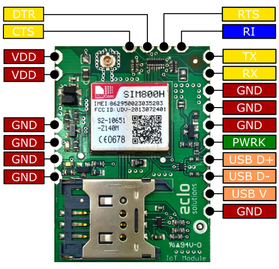
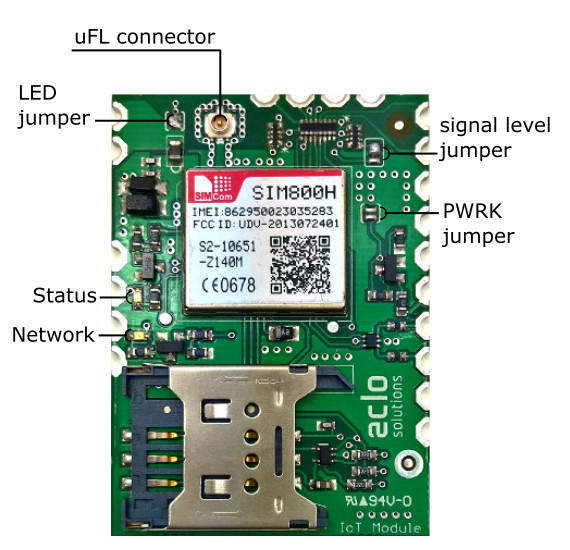

- 
- 
Tiny GSM/GPRS module with SIMCOM's SIM800H. Mesuring only 39x48[mm] this module has everything you need to "IoT enable" your next project. We provide a .NET Micro Framework driver that makes using it a breeze.
Features (supported by the .NET Micro Framework driver)1):
- Quad band 850/900/1800/1900MHz
- GPRS multi-slot class 12/10; mobile station class B
- Supply voltage range 3.4 to 4.3V
- TCP sockets (with TLS support)
- HTTP(S) client
- SMS
- SNTP
- GPS like location service through SIMCOM API
- UART pins supporting 3.0V and 3.3V levels
- Power and network status LEDs
- SIM card holder
- uFL antenna connector
- Castellation pins for easy prototyping and production use
- Size: 39x48[mm]
- Operating temperature range: -40 to +85°C
- Certifications: CE, GCF, FCC, ROHS, REACH
1) SIM800H has several other features that are still available but aren't exposed through the supplied driver and/or hardware pins.
SIM800H modes and power consumption
- 2A peak burst when transmiting
- 148mA to 344mA @ Active GPRS data mode
- 1.02mA @ Idle with full funcionality
- 0.796mA @ Minimum funcionality
- ~60uA @ Power down
Power supply
Any power supply (4.3V max!) able to withstand the 2A peak bursts will work. We recommend using a Li-Polymer or Li-Ion battery.
Available pins & signals
- UART signals: TX,RX, DTR, RTS & CTS
- Power-key pin (to control SIM800H power on/off)
- Ring indicator (to signal incoming call or SMS)
- 2xVcc (4.3V max!)
- 8xGND
UART signal levels
UART signals can be connected to host system using 3.0V or 3.3V voltage levels. The selection is carried through a two-position solde jumper. Default is 3.3V.
LED indicators
The module includes LEDs for power and network status.LEDs have relevant power consumption and conserving power is important in battery powered devices. For this reason LEDs are powered through a solder jumper that you can open in production devices after initial testing and debuging. In field operation you can easily short the jumper with a screw driver tip, for example, for a quick visual debug of the module status.
Power LED (green)
On when module is active (powered on).
Network status LED (blue)
- fast blink (~300ms period) on GPRS communication active
- blink (~800ms period) when module is not registered
- slow blink (~3s period) when module is registered
.NET Micro Framework driver, support libraries and code examples
We maintain a driver for .NET Micro Framework (v4.3 and v4.4) that is available as a Nuget package.
We maintain a .NET Micro Framework (v4.3 and v4.4) build of AMQP Lite for the SIM800H module available as a Nuget package.
Check the documentation of the .NETMF driver here.
For code samples and example apps please check the GitHub repository
Eagle library
Donwload the Eagle CAD library with the module footprint and component here.
Support or Contact
This module is supplied by Eclo Solutions. You can reach us here.